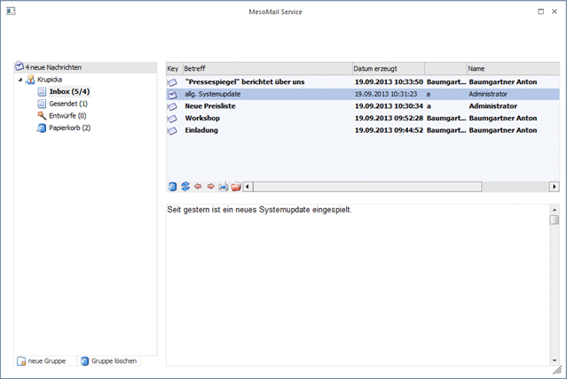
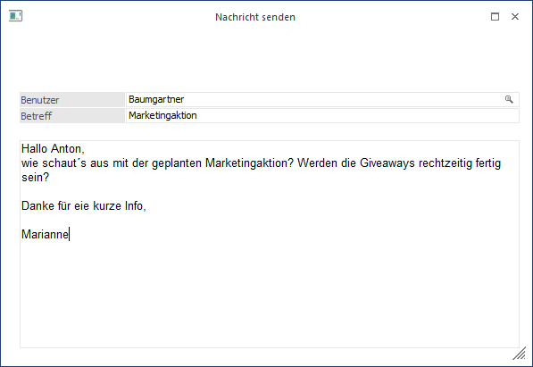
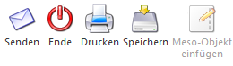
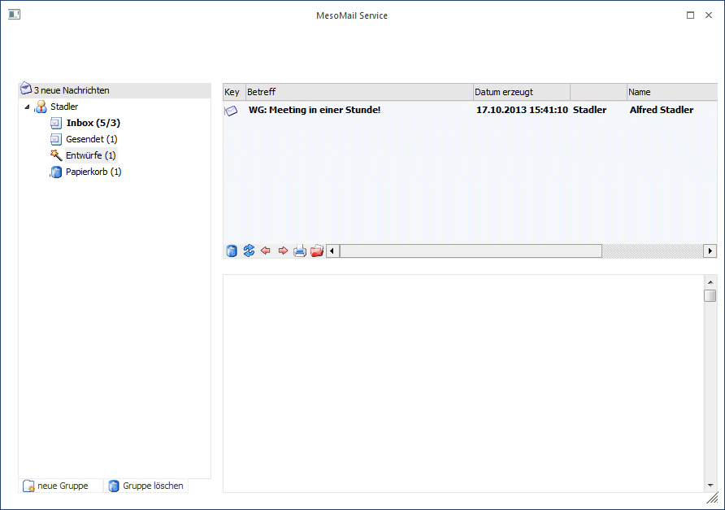
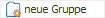
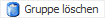
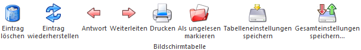
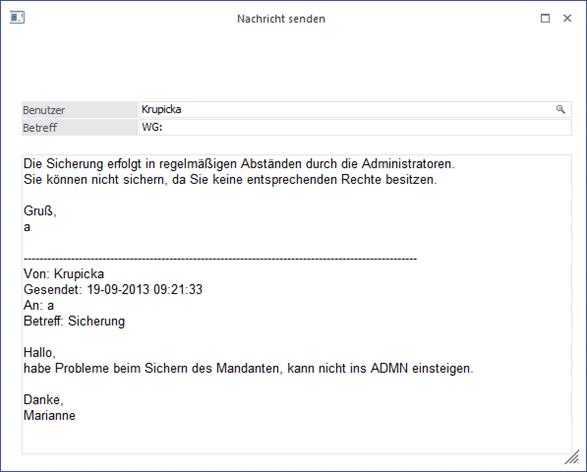
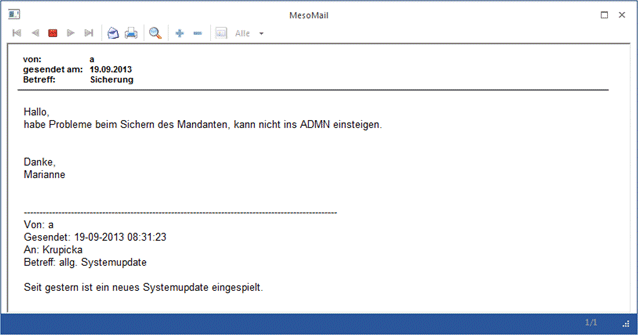

Mittels MesoMail Service können WinLine Benutzer direkt in der WinLine an einen anderen Benutzer Mails senden, die dann auch direkt in der WinLine aufgerufen werden können. Der Menüpunkt befindet sich unter
1 CRM
1 MesoMail Service

Ø
Durch einen Mausklick auf den Neu-Button kommt man in das Fenster indem die Mails erfasst werden können.

Im Feld Benutzer hinterlegen Sie die Benutzernamen jener Benutzer, die das Mail erhalten sollen. Dies können auch mehrere Benutzer sein. Mittels Mausklick auf die Lupe öffnen Sie den Matchcode der eine Auflistung aller WinLine Benutzer beinhaltet.
Im Feld Betreff können Sie den Betreff des Mails angeben.
Den Text des Mails hinterlegen Sie im großen weißen Eingabefeld.
Buttons

Ø Senden
Mittels Mausklick auf den Senden Button verschicken Sie das Mail an die im Feld Benutzer hinterlegten Benutzer.
Ø Ende
Durch Mausklick auf den Ende Button oder durch Drücken der ESC-Taste wird das Fenster geschlossen.
Ø Drucken
Mittels Drucken Button könne Sie das Mail ausdrucken
Ø Speichern
Möchte man auf ein Mail antworten, beziehungsweise weiterleiten, seinen Kommentar hinzufügen, aber erst zu einem späteren Zeitpunkt verschicken, so hat man die Möglichkeit das Mail mittels Speichern Button zu speichern. Dieses Mail wird im Verzeichnis Entwurf abgelegt und kann zu einem späteren Zeitpunkt versendet werden.

Der Empfänger des Mails erhält einen neuen Eintrag in seiner Inbox. Sobald man das Mail öffnet, wird das Mail als gelesen gekennzeichnet. Dieses Mail kann nun in von der Inbox in ein beliebiges Verzeichnis per Drag & Drop verschoben werden.
Eigene Verzeichnisse kann man sich mittels Button "Neue Gruppe" anlegen.
Ø

neue GruppeMöchte man ein neues Verzeichnis für eine Gruppe anlegen, so muss man den Fokus auf einen bestehenden Eintrag, der jener Ebene entspricht, auf der ein neues Verzeichnis angelegt werden soll. Es sind 3 Ebenen möglich.
Beispiel
Es soll das Verzeichnis Ebene 1 angelegt werden. Der Fokus muss daher auf den Benutzernamen gestellt werden (in dem Fall Stadler) und anschließend der "Neue Gruppe Button" aktiviert werden. Daraufhin wird ein neuer Eintrag erzeugt, dem Sie dann einen beliebigen Namen vergeben können. Möchten Sie jetzt unterhalb dieses Eintrags noch eine Gruppe anlegen, so müssen Sie den Fokus auf den Eintrag Ebene 1 stellen und wieder den Button "Neue Gruppe" aktivieren. Mit Hilfe der Gruppen können Sie zum Beispiel die Mails nach Abteilungen sortieren, indem Sie pro Abteilung (Buchhaltung, Einkauf, Verkauf, etc.) eine Gruppe anlegen, der Sie dann wieder Untergruppen (z.B. pro Mitarbeiter eine Untergruppe) zuordnen können.
Ø

Gruppe löschenBenötigt man eine Gruppe nicht mehr, oder hat man eine Gruppe falsch angelegt, so kann man diese mit dem Gruppe löschen Button löschen, indem Sie den Fokus auf die gewünschte Gruppe stellen und auf den Button klicken.
Tabellenbuttons

Ø Eintrag löschen
Mittels Eintrag löschen Button, können Einträge auf denen der Fokus steht in das Verzeichnis Papierkorb verschoben werden. Setzt man den Fokus auf einen sich im Verzeichnis Papierkorb befindenden Eintrag und wählt erneut diesen Button an, wird dieser Eintrag endgültig gelöscht.
Ø Eintrag wiederherstellen
Befindet sich ein Eintrag im Verzeichnis Papierkorb und man möchte diesen wieder zurück in sein altes Verzeichnis stellen, kann man dies mit Hilfe dieses Buttons. Dazu müssen Sie nur den Fokus auf den gewünschten Eintrag im Verzeichnis Papierkorb stellen und einen Mausklick auf diesen Button setzen. Dann wird das Mail automatisch in jenes Verzeichnis verschoben, indem es sich vor dem Verschieben in den Papierkorb befunden hat.
Ø Antwort
Dieser Button ermöglicht dem Empfänger eines Mails, dem Absender eines Mails eine Antwort zu schicken. Man sieht dann den erhaltenen Text und hat die Möglichkeit einen Antworttext beizufügen oder den erhaltenen Text zu editieren. Als Empfängerbenutzer wird automatisch der Absender des Mails vorgeschlagen. Vor dem Betreff wird ein WG gesetzt, um zu kennzeichnen, dass es sich hierbei um eine Antwort auf ein gesendetes Mail handelt.

Ø Weiterleiten
Möchte man ein erhaltenes Mail an andere Benutzer weiterleiten, so kann man dies mit Hilfe dieses Buttons. So wie im Punkt Antwort Button beschrieben, hat man auch hier die Möglichkeit einen Text hinzuzufügen, oder den erhaltenen Text zu editieren. Der Unterschied zwischen Antwort Button und Weiterleiten Button liegt darin, dass bei Auswahl des Weiterleiten-Buttons der Empfänger nicht vorgeschlagen wird.
Ø Drucken
Mittels "Drucken Button" können Mails ausgedruckt werden. Dazu muss man den Fokus auf das gewünscht Mail stellen und auf den "Drucken Button" klicken.

Ø Als ungelesen markieren
Möchte man ein bereits gelesenes Mail als ungelesen markieren, muss man den Fokus auf das gewünschte Mail stellen und auf diesen Button klicken.
Ø Tabelleneinstellungen speichern
Die Spalten einer Tabelle können grundsätzlich an beliebige Positionen verschoben, bzw. in der Breite entsprechend angepasst werden. Durch Anwahl des Buttons "Tabelleneinstellungen speichern" werden die Einstellungen benutzerspezifisch gespeichert und bei dem nächsten Aufruf des Programmpunktes wieder vorgeschlagen.
Ø Gesamteinstellungen speichern
Im Gegensatz zu "Tabelleneinstellungen speichern" können mit "Gesamteinstellungen speichern" mehrere Tabellenaufbauten gespeichert und nach Wunsch geladen werden. Zusätzlich werden Sonderfunktionen der Tabelle (z.B. "Spalte gruppieren") ebenfalls bei der Speicherung bedacht.